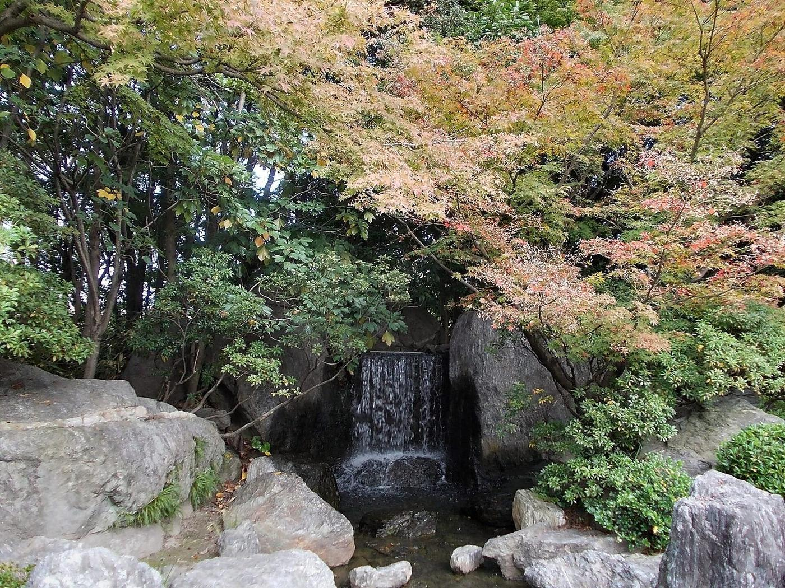
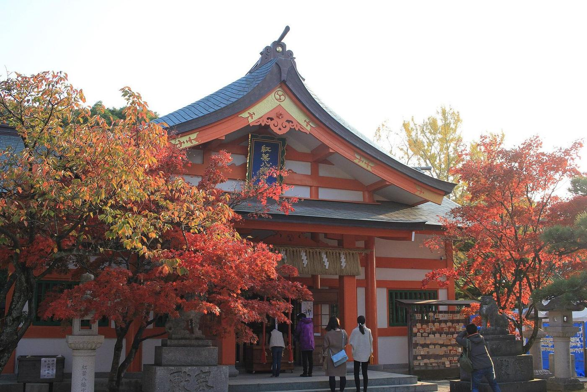
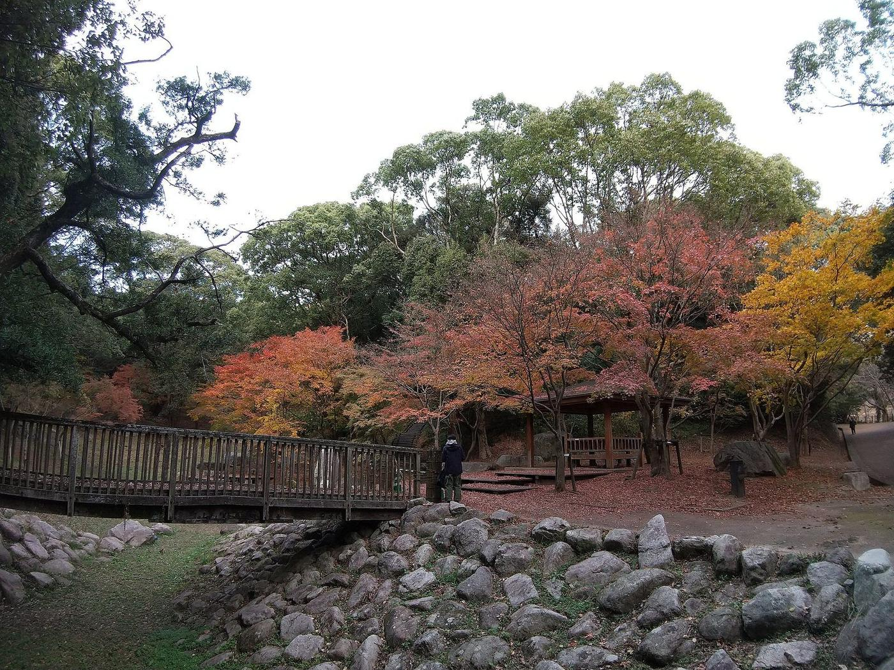
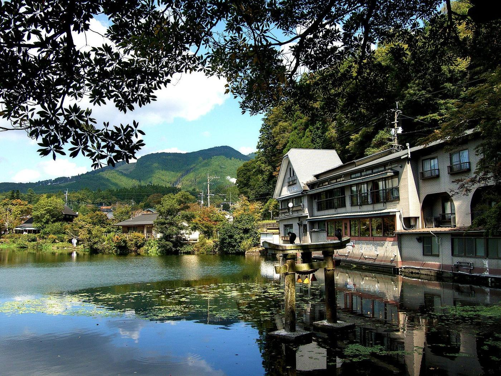
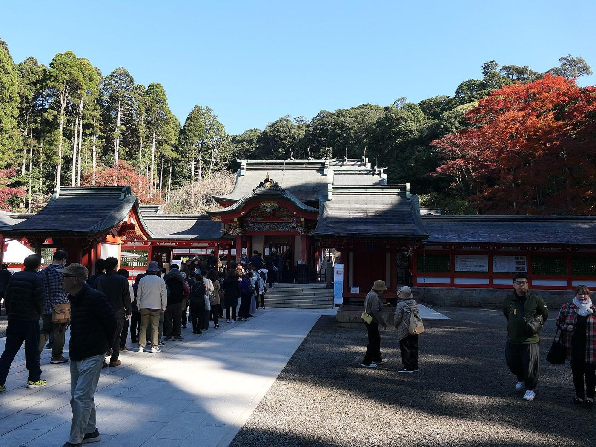
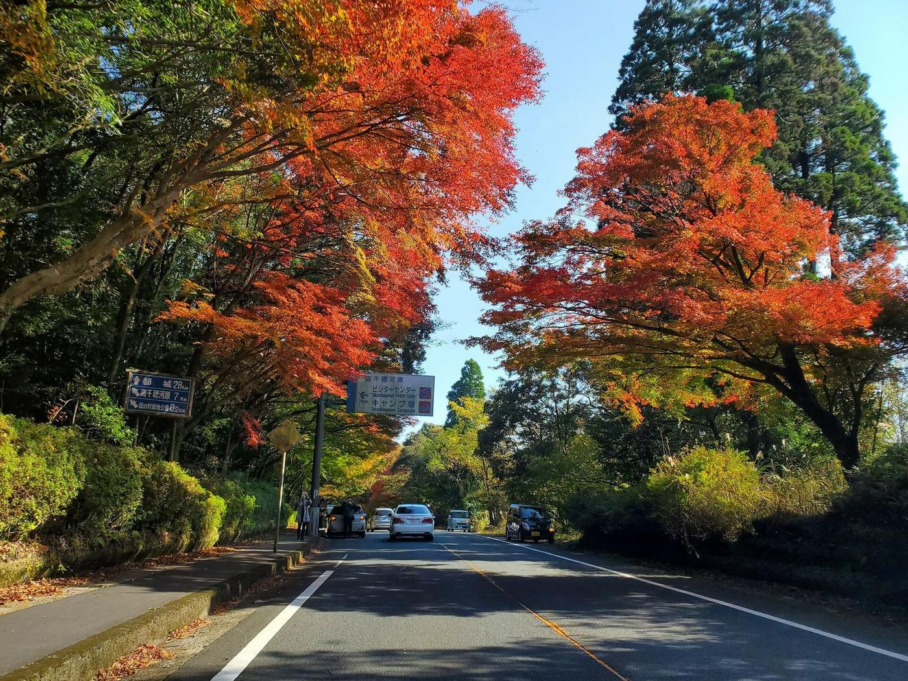
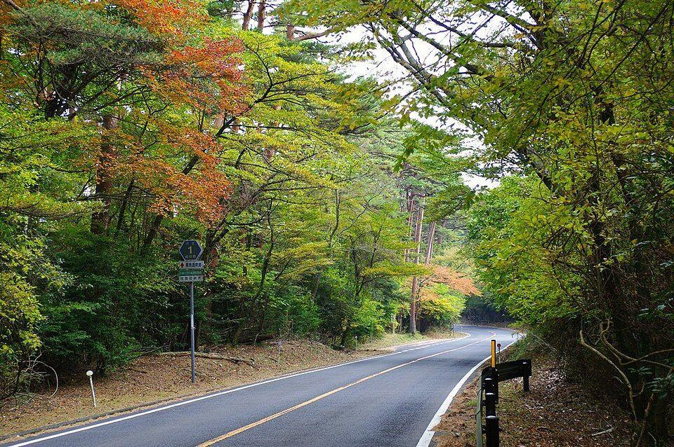
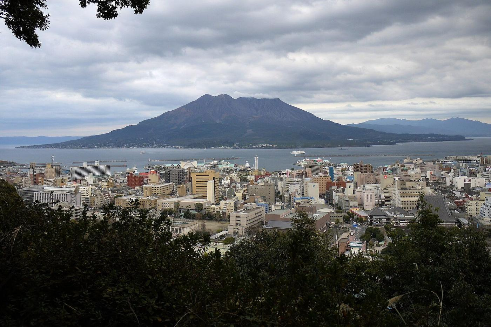
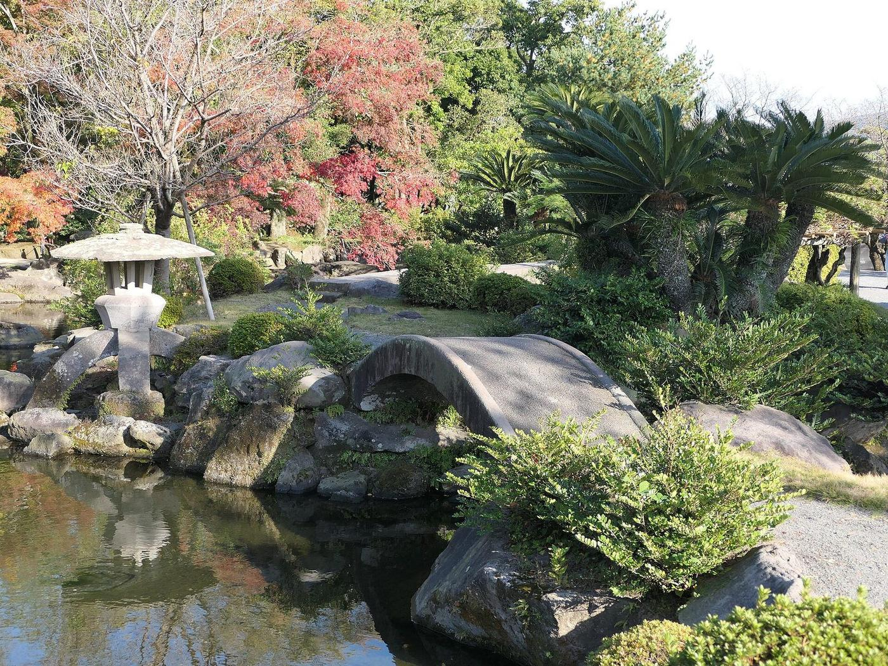
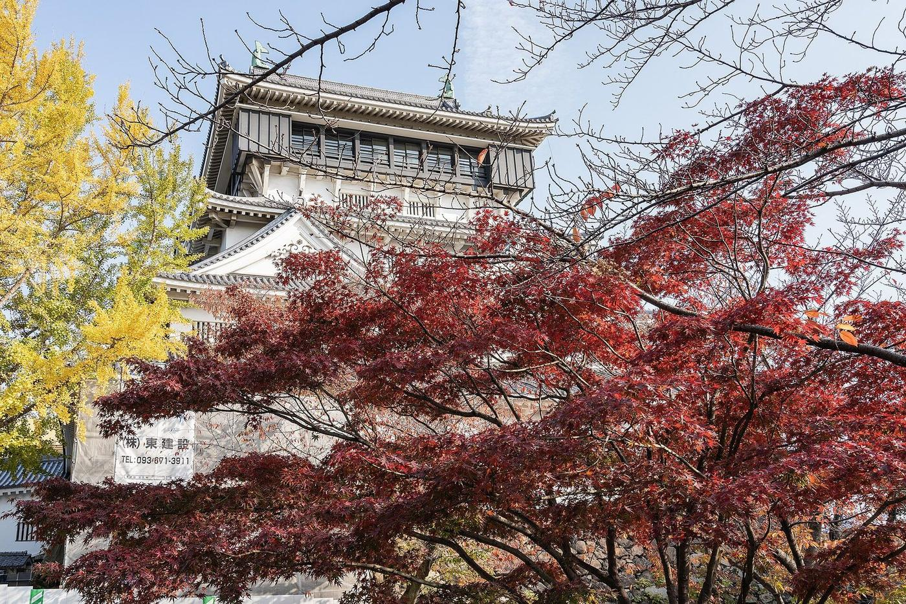

見頃 正值觀賞期
開始轉色 色づき始め
報告不一 來源結論不同
開始褪色 色あせ始め
未確認 未找到本季即時色況
楓
七日一覽
| 行程日 |
主要地點 |
目前色況 |
報告日期 |
| D1 11/24 |
博多市區附近 |
舞鶴公園約六成 紅葉八幡宮剛開始轉色 |
11/18–19 |
| D2 11/25 |
高千穗峽 |
開始轉色 tenki.jp 預測 11/21 起見頃 |
11/18–19 |
| D3 11/26 |
金鱗湖・由布院 |
未找到即時色況 例年見頃多為 11 上旬至中旬 |
— |
| D4 11/27 |
霧島神宮・城山 |
神宮報告不一 高原沿線見頃，えびの已開始褪色 |
11/16–19 |
| D5 11/28 |
勝山公園／小倉城 |
見頃 本日上午鎖定行程 |
11/19 |
| D6 11/29 |
博多休養日 |
時間較鬆，可補看舞鶴、友泉亭、紅葉八幡宮 |
同 D1 |
| D7 11/30 |
退房・HX641 |
中午前退房，不另安排賞楓 |
— |
D1 11 月 24 日（火） 博多抵達
HX638 約 12:25 抵 FUK · 午後 Canal City／車站周邊 · 17:00 前田屋 博多店 · 住宿 オリエンタルホテル 福岡 博多ステーション
當日午後時間有限，紅葉只宜順路、近酒店或地鐵沿線短訪，不必遠走。市區楓樹多數仍在轉色初期；銀杏與公園黃葉較有看頭。
舞鶴公園福岡城跡 · 中央區城內
順路附近
約六成轉色
暫時沒有可用於參考的紅葉相。未在 Wikimedia Commons 找到可確認為此處、且授權可供轉載的秋季相片。
天神／大濠一帶的城跡公園，地鐵赤坂或大濠公園站步行約 8 分。Weathernews 於 11 月 19 日紀錄「一半以上轉色（整體約六成）」，樹種包括銀杏、櫻、欅、いろは紅葉。ジョルダン所載例年見頃偏早（10 下旬至 11 上旬），且頁面更新日期較舊，不以該例年區間當作本季現況。
行程提示：D1 若行李已放好、晚餐前有約一小時，可與大濠公園一起走。D6 休養日會更從容。
來源：Weathernews 舞鶴公園（2026/11/19）
大濠公園日本庭園中央區大濠公園
順路附近
中旬已開始轉色

參考相 · 大濠公園日本庭園
攝於 2011 年 11 月 3 日（十一月初，楓葉剛開始轉色），用作庭園紅葉模樣參考，並非 2026 年即時色況。相片：STA3816，CC BY-SA 3.0，via Wikimedia Commons。
大濠公園旁的日本庭園。官方於 11 月 14 日公布 11 月 17 日「紅葉の會」時，庭園紅葉已「開始轉色」（色づき始めた），並有夜間點燈。其後未見更新至 11 月 19 日的新色況，不能當成當日仍處於同一程度，只能確認中旬已開始轉色。大濠公園本園沒有找到獨立的本季色況報告。
行程提示：與舞鶴公園相鄰，適合 D1 短訪或 D6 散步。庭園有入園時間與定期休園（週一），出發前請再看官網。
來源：大濠公園日本庭園「紅葉の會」公告（2026/11/14）
友泉亭公園城南區 · 池泉回遊式庭園
順路附近
約三成 · 預測 11/22 起見頃
暫時沒有可用於參考的紅葉相。未在 Wikimedia Commons 找到可確認為此處、且授權可供轉載的秋季相片。
黑田藩別墅改建的純日本庭園，約 150 本楓樹。Weathernews 11 月 18 日紀錄「開始轉色（整體約三成）」，並預測見頃約 11 月 22 日起、落葉約 12 月 7 日起。例年見頃為 11 下旬至 12 上旬。若預測大致準確，D1 仍偏早，D6（11/29）可能已進入見頃，但仍屬預測，不是現場實況。
見頃預測
11/22 頃起（Weathernews）
行程提示：需搭巴士（友泉亭站再步行），D1 抵達日較趕；更適合放在 D6。入園收費，週一休園。
來源：Weathernews 友泉亭公園（2026/11/18）· 簡介亦見福岡市觀光「よかなび」（該特輯 9 月更新，不含即時色況）
紅葉八幡宮早良區高取 · 地鐵藤崎站
順路附近
剛剛開始轉色

參考相 · 紅葉八幡宮（もみじ八幡宮）
攝於 2018 年 11 月 25 日，用作歷年紅葉模樣參考，並非 2026 年即時色況。相片：新幹線，CC BY-SA 4.0，via Wikimedia Commons。
社名就叫紅葉，地鐵藤崎站步行約 6–7 分，鄰近西新。神社官方 11 月 18 日寫「稍微開始轉色了」，並表示視之後降溫，感覺約 12 月 1 日起才會到見頃。Weathernews 同日紀錄「稍微開始轉色（整體約兩成）」，見頃預測 11 月 30 日頃起，兩者大致相符。よかなび載「もみじ祭」為 11 月 21–29 日，傍晚至約 20 時點燈；Weathernews 則把祭典日期寫作 11 月 28、29 日，點燈 21–29 日。活動細節請以神社當日公告為準。
見頃看法
官方感覺約 12/1；WN 預測約 11/30 起
行程提示：D1 色況尚早，不必特登。D5 在西新 初喜 午餐後很近，當日也是點燈期間；D6 是祭典／點燈最後一天，適合慢慢看，但不要期待已到高峰。
來源：紅葉八幡宮「紅葉狀況 11/18」 · Weathernews 紅葉八幡宮（2026/11/18）· 祭典：よかなび
樂水園博多區 · 距酒店較近
酒店附近
未找到即時色況
暫時沒有可用於參考的紅葉相。未在 Wikimedia Commons 找到可確認為此處、且授權可供轉載的秋季相片。
樂水園是博多區的日式庭園，距離博多站與酒店不遠，理論上最利 D1 順路；但 tenki.jp、JR 紅葉だより與查到的官方頁都沒有本季即時色況，這裡不强填百分比。
查無：tenki.jp 福岡一覽、JR おでかけネット 紅葉だより 福岡。
西公園 もみじ谷中央區西公園 · 與舞鶴、大濠相鄰
順路
未找到即時色況

參考相 · 西公園 もみじ谷
攝於 2022 年 12 月 9 日（偏晚季），用作もみじ谷紅葉模樣參考，並非 2026 年即時色況。相片：Hirho，CC BY-SA 4.0，via Wikimedia Commons。
西公園「もみじ谷」在 Weathernews 福岡一覽中只有例年見頃（11 下旬至 12 上旬），沒有 2026 年即時色況。西公園與舞鶴、大濠相鄰，可一併散步，色況需現場判斷。
查無即時色況。例年時期見 Weathernews 福岡紅葉一覽（無即時色況數字）。
D2 11 月 25 日（水） 高千穗一日遊
08:00 集合（地點仍待確認）· 晚間 19:30 焼肉長介（藥院、席のみ、擬自行訂）
當日主線是高千穗峽。兩則較新的官方系統報告（tenki.jp 11/19、JR 11/18）都寫「開始轉色」；Weathernews 11/17 則寫已見頃。晚間已鎖定藥院燒肉，不宜為峽谷夜燈而拖延回程。
高千穗峽高千穂峡 · 真名井の滝 · おのころ池
路線上
開始轉色
參考相 · 高千穗峽（高千穂峡）
攝於 2012 年 11 月 24 日，真名井之瀧與遊船，用作峽谷紅葉模樣參考，並非 2026 年即時色況。相片：Hiroaki Kaneko，CC BY-SA 3.0，via Wikimedia Commons。
日本氣象協會 tenki.jp 於 11 月 19 日 15:00 發表：現況為「開始轉色」（見頃前、局部可見紅葉），今年見頃預測為 11 月 21 日起；例年見頃是 11 月中旬至下旬。樹種：楓、藤、槲、欅、紅葉。JR おでかけネット 11 月 18 日同樣寫「開始轉色」，觀測點是峽內おのころ池周邊的紅葉。
Weathernews 在更早的 11 月 17 日寫「見頃（七至八成轉色）」，並預測落葉約 11 月 29 日起。這與 18–19 日的 tenki.jp、JR 報告不一致。本頁以較新的兩則「開始轉色」為主文，把 Weathernews 列為前一日的不同觀察，不自行改寫成單一成數。若 tenki.jp 的見頃預測大致準確，11 月 25 日到訪時有機會已進入見頃，但那仍是預測，出發前請再看一次。
現在的色況（主）
開始轉色（tenki.jp 11/19、JR 11/18）
行程提示：這是當日最值得看的紅葉點，租船與否視團行程與現場排隊。峽谷夜燈雖有，但 19:30 要回到藥院，不應為夜燈改晚餐計畫。
來源：tenki.jp 高千穗峽（19 日 15:00 發表，標示為 19 日現況）· JR 紅葉だより 宮崎（2026/11/18）· 補註：Weathernews 高千穗峽（2026/11/17）
五ヶ瀬渓谷（附近參考）較高海拔，非行程主線
遠途選項
開始褪色
暫時沒有可用於參考的紅葉相。未在 Wikimedia Commons 找到可確認為此處、且授權可供轉載的秋季相片。
tenki.jp 11 月 19 日將五ヶ瀬渓谷標為「開始褪色」。它說明同一地區、不同海拔的進度可以差很遠：峽谷仍在轉色，較高的渓谷可能已過。不建議為了這一點離開鎖定的高千穗行程。
來源：tenki.jp 五ヶ瀬渓谷（19 日現況：色あせ始め）
D3 11 月 26 日（木） 由布院一日
鎖定列車 09:17 博多出發、15:56 回程（列車名稱仍待補）
金鱗湖與湯之坪街道就在步行範圍內，是當日自然會走到的地方。可是截至 11 月 19 日，tenki.jp 大分一覽與 JR 紅葉だより大分都沒有收錄金鱗湖或由布院，也未找到市官方的本季即時色況。不能因為例年多在 11 月中旬結束，就斷言 26 日一定過峰。
金鱗湖きんりんこ · 湖畔散步約 400 公尺
路線上
未找到本季即時色況

參考相 · 金鱗湖（きんりんこ）
攝於 2026 年 10 月（初秋，湖畔尚有綠意與部分轉色），用作辨認金鱗湖與湖中鳥居的參考，並非 11 月 26 日或見頃實況。相片：Ivan P，CC0，via Wikimedia Commons。
ジョルダン紅葉情報與 11 月 10 日的導覽稿都寫：湖畔樹木例年在 11 月上旬至中旬轉色；由布市官方旅遊資訊也常推薦在寒冷的清晨看朝霧。11 月 26 日已過這段例年區間，有可能過峰或只剩部分顏色，但沒有 2026 年的現場報告可以引用，這裡只記例年時期與「未確認現況」。當日火車約上午出發，趕到湖邊多半已過清晨，朝霧不是此行的重點。
行程提示：把由布院當溫泉與散步日最穩妥。若到湖邊仍有殘色，自然是驚喜；不要把這一天當成追楓主場。想看較有把握的紅葉，優先 D5 小倉與 D2 高千穗。
例年時期：ジョルダン 金鱗湖（頁面載最終更新 2026-11-10，無即時色況欄）· 同站 11/10 導覽（引述例年 11 上旬至中旬，並連到由布市官方旅遊指南）。查無：tenki.jp 大分、JR 紅葉だより 大分。
D4 11 月 27 日（金） 霧島・鹿兒島
さくら401 07:58→09:39 · きりしま8 10:00→10:50 · 霧島神宮約 1 小時 · 黒かつ亭 14:45–15:25 · 城山展望台 16:15–17:15（日落約 17:15）· ★つばめ338 20:52→22:45
這天行程很緊，紅葉主場是霧島神宮及其參道周邊；高地與大浪池雖有見頃報告，但無法塞進約一小時的停留。城山展望台是為了櫻島日落，不是紅葉名所。請注意：舊版頁面曾把霧島寫成 D5，正確日期是 11 月 27 日（D4）。
霧島神宮（含鎮守の森）霧島市霧島田口 · 朱色社殿與參道
路線上
來源結論不同

參考相 · 霧島神宮
攝於 2025 年 11 月 26 日，社殿與右側紅葉，用作歷年模樣參考，並非 2026 年即時色況。相片：Hyppolyte de Saint-Rambert，CC BY 4.0，via Wikimedia Commons。
霧島市官方紅葉頁於 11 月 16 日更新，將「霧島神宮」標為「見頃」；例年見頃為 11 月下旬。鎮守の森就在神宮境內，沒有單獨的色況報告，視為同一範圍。Weathernews 的觀測名稱是「霧島（霧島神宮附近）」，同樣在 11 月 16 日卻寫「稍微開始轉色（整體約兩成）」，並預測見頃約 11 月 25 日起、落葉約 12 月 8 日起。兩個來源日期相同、結論差很遠。可能因為 Weathernews 把神宮周邊較廣的範圍算進去（市官方把「國道 223 號沿線、神宮周邊」另列為開始轉色），但這只是合理推測，不是已證實的原因。本頁並列兩則，不以其中一則覆蓋另一則。tenki.jp 沒有「霧島神宮」獨立測點。
Weathernews
約兩成；預測 11/25 起見頃
例年見頃
11 下旬（市官方；觀光連盟亦作 11 下旬至 12 上旬）
行程提示：已排約一小時走神宮，把時間用在社殿、參道與鳥居附近即可。若現場顏色未滿，仍值得看建築與神木；不必為了追更高處的紅葉而耽誤 14:45 的黑豬定食。
來源：霧島市「霧島的紅葉狀況」（更新日 2026/11/16）· Weathernews 霧島（霧島神宮附近）（2026/11/16）· 例年補充：鹿兒島縣觀光「霧島・姶良紅葉」（例年時期，非即時色況）
國道 223 號沿線（神宮周邊）日本の道百選 · 大鳥居往宮崎方向約 500 公尺
順路附近
開始轉色

參考相 · 國道 223 號（霧島田口）
攝於 2021 年 11 月 19 日，霧島田口路段的楓樹隧道，用作沿線紅葉模樣參考，並非 2026 年即時色況。相片：Sanjo，CC BY-SA 4.0，via Wikimedia Commons。
霧島市 11 月 16 日將此段標為「開始轉色」，例年見頃為 11 月下旬。觀光連盟介紹為神宮大鳥居附近的紅葉隧道，從觀光案内所停車場步行約 10 分。時間夠再走一段；不要在車道上停留拍照。
來源：霧島市紅葉狀況（2026/11/16）· かごしまの旅
縣道 1 號 · 大浪池 · 丸尾（高地）霧島溫泉鄉周邊，非神宮停留可及
遠途選項 · 時間不夠
見頃（高地）

參考相 · 縣道 1 號（牧園町新床）
攝於 2010 年 11 月 6 日，縣道 1 號牧園町新床路段，部分秋色。用作高地沿線參考，並非大浪池湖畔特寫，亦非 2026 年即時色況。相片：Krypton，CC BY-SA 4.0，via Wikimedia Commons。
霧島市 11 月 16 日：縣道 1 號線、大浪池、丸尾（霧島溫泉鄉）周邊、高千穗河原、縣道 480 號（樹帶隧道）、神話の里公園均為「見頃」。tenki.jp 11 月 19 日亦將「縣道 1 號線（丸尾–大浪池登山口）」標為見頃，樹種為紅葉。這些點需要額外交通時間，與「神宮約 1 小時、再趕鹿兒島中央午餐」的鎖定表衝突，只作參考，不建議當日改線。市官方並提醒神宮周邊與大浪池登山口不要路邊違規停車。新川渓谷遊步道因災害仍封閉。
對照：同屬霧島連山、較高的えびの高原，tenki.jp 11 月 19 日已是「開始褪色」。高地並非處處都還在高峰。
來源：霧島市紅葉狀況（2026/11/16）· tenki.jp 縣道 1 號線（19 日現況：見頃）· えびの高原：tenki.jp（19 日現況：色あせ始め）
城山展望台16:15–17:15 · 為櫻島日落而來
路線上（觀景，非紅葉名所）
無獨立紅葉報告

展望台景觀（非紅葉相）· 城山展望台
攝於 2010 年 1 月 27 日，從展望台望櫻島與市街。此處不是紅葉景點，相片只用來辨認展望位置。相片：Jody McIntyre，CC BY-SA 2.0，via Wikimedia Commons。
鎖定目的是看櫻島與市區日落（約 17:15），不是賞楓。tenki.jp、JR 鹿兒島紅葉だより與查到的官方紅葉頁都沒有城山的色況。展望台周邊以常綠闊葉林為主，即使有黃葉也屬加分，不要為紅葉額外留時間。
查無獨立色況。景點說明見鹿兒島市觀光ナビ 城山。
仙巖園磯庭園 · 當日時間不夠
遠途選項
未找到官方即時色況

參考相 · 仙巖園（仙巌園）
攝於 2025 年 12 月 5 日，曲水庭的石燈籠、橋與紅葉，用作庭園模樣參考，並非 2026 年即時色況。相片：Hyppolyte de Saint-Rambert，CC BY 4.0，via Wikimedia Commons。
名園，但午餐在中央站、其後要上城山看日落，中間塞不進仙巖園的參觀時間。tenki.jp 與 JR 鹿兒島紅葉だより均未收錄此點，也未找到園方本季即時色況，故不引用第三方彙整網站的推估值。
查無：tenki.jp 鹿兒島、JR 紅葉だより 鹿兒島（該頁目前主要是曽木の滝公園見頃，位置在伊佐市，不在當日路線上）。
D5 11 月 28 日（土） 小倉紅葉 ＋ 西新午餐
ソニック5 08:02 博多 2 番線 → 08:56 小倉 · 勝山公園／小倉城 09:20–11:15 · ★ソニック20 11:40→12:28 博多 6 番線 · 地鐵往西新 · 初喜 2F 13:30。全九州 Pass 不含山陽新幹線，去程回程都用索尼克。
這是行程裡色況最有把握的一天。勝山公園／小倉城在 11 月 19 日已被 tenki.jp 與 JR 同時標為見頃，而且就在鎖定的上午時段。11:15 必須離開，不要臨時改去河內藤園。
勝山公園／小倉城小倉北區城內 · 西小倉站步行可及
路線上
見頃

參考相 · 勝山公園／小倉城（勝山公園・小倉城）
攝於 2018 年 11 月 25 日，天守與紅葉、銀杏，用作歷年見頃模樣參考，並非 2026 年即時色況。相片：wongwt，CC BY-SA 2.0，via Wikimedia Commons。
tenki.jp 11 月 19 日 15:00：現況「紅葉見頃」（整體已轉色），今年見頃預測為 11 月中旬至 12 月中旬；例年為 11 上旬至 12 上旬。樹種：黃櫨、銀杏、欅、紅葉、櫻。解說提到城池周圍的欅很有氣勢，也可從市役所展望室或リバーウォーク看整體。JR おでかけネット 同日更新，同樣為「紅葉見頃」，觀測是公園內紅葉的平均。
Weathernews 同日寫「一半以上轉色（整體約六成）」，並預測見頃約 11 月 23 日起、落葉約 12 月 5 日起。定義比 tenki.jp／JR 保守，但方向一致：11 月 28 日到訪時，應已在或接近觀賞期。本頁主文採用 tenki.jp 與 JR 的「見頃」，並保留 Weathernews 的六成紀錄，不改寫數字。
現在的色況（主）
見頃（tenki.jp、JR，11/19）
補註
WN 11/19：約六成；預測 11/23 起見頃
行程提示：09:20–11:15 足夠走公園、城下與（若有興趣）小倉城庭園。Weathernews 提到城見テラス是拍照點，但庭園沒有獨立色況。11:15 出發趕 11:40 索尼克，不要再加景點。
來源：tenki.jp 勝山公園（小倉城）（19 日 15:00 發表）· JR 紅葉だより 福岡（勝山公園更新 2026/11/19）· 補註：Weathernews 勝山公園（2026/11/19）
紅葉八幡宮（午後加訪）西新午餐之後，地鐵一站到藤崎
順路附近
剛剛開始轉色 · 當日有點燈
參考相 · 紅葉八幡宮（もみじ八幡宮）
與上文同一張歷年紅葉參考相，攝於 2018 年 11 月 25 日，並非 2026 年即時色況。相片：新幹線，CC BY-SA 4.0，via Wikimedia Commons。
初喜在西新，神社在鄰站藤崎，午餐後步行或乘一站即可。色況仍早（見 D1），但 11 月 28 日是點燈期間，也有可能碰上もみじ祭。當作午餐後的小散步，不要期待已是滿山紅葉。
色況與祭典來源同 D1：神社官方 11/18 · よかなび
河內藤園（秋開園）八幡東區 · 不是小倉城能順路走到的地方
遠途選項 · 當日趕不上
開園前：入口開始轉色，整體仍多青葉
暫時沒有可用於參考的紅葉相。未在 Wikimedia Commons 找到可確認為此處、且授權可供轉載的秋季相片。 Wikimedia Commons 現有相片多為 5 月藤花或春紅葉，不宜當作秋季紅葉參考。可參閱河內藤園官方網站。
官方宣布 2026 年紅葉開園為 11 月 21 日（土）至 29 日（日），9:00–17:00（16:00 最後入園）。福岡縣觀光「クロスロードふくおか」於 11 月 17 日更新色況：入口開始轉色，整體仍多青葉。園內是急斜、未舖裝的山道，一圈約 30 分鐘，腳步不穩者不適合。11 月 17 日之後未找到官方新色況；開園後顏色可能再變，出發前應看園方網站。它在八幡東區河內，與小倉城不是同一區域，無法在 09:20–11:15 的鎖定窗內加插，也不要改乘山陽新幹線。
來源：河內藤園公式（開園期間）· クロスロードふくおか 福岡縣紅葉特輯（色況更新 2026/11/17）
D6 11 月 29 日（日） 博多休養
無鎖定長途行程，適合補看 D1 沒走到的市區庭園與神社。
若友泉亭的見頃預測大致準確，這天可能已比較好看；舞鶴公園 11 月 19 日已約六成。紅葉八幡宮是もみじ祭／點燈最後一天，顏色仍可能偏早。不必出遠門。
休養日建議順序
博多出發，當日可及
想看庭園：友泉亭公園（11/18 約三成，預測 11/22 起見頃）或大濠日本庭園＋舞鶴公園（11/19 約六成）。想順便逛商店街：紅葉八幡宮（點燈最後一天，見頃大概還要再等幾天）。色況細節見 D1 各條，出發前再核對一次官方與 tenki.jp。
較遠、不在預設休養日路線：太宰府 寶滿宮竈門神社，tenki.jp 與 JR 於 11 月 19 日均為「開始轉色」（JR 另註境內平均）。往返要半日，只有在想另訪太宰府時才值得加。另外，有時被提到的「環境藝術之森」位於佐賀縣唐津（作禮山），不是霧島附近，從博多過去單程約需較長時間，不列入本日建議。
竈門神社：tenki.jp、JR 福岡（2026/11/19，開始轉色）。環境藝術之森位置見園方公式サイト（唐津）。
D7 11 月 30 日（月） 退房回程
中午前退房 · HX641 14:45 FUK 出發、18:00 抵 HKG
這天不另排賞楓。若退房後、出發前仍有短暫空隙，也只宜在博多站周邊走動，不要再出遠門。
出典
來源與凡例
色況用語依日文原報告翻譯：青葉（尚未轉色）、色づき始め（開始轉色）、紅葉見頃（見頃）、色あせ始め（開始褪色）、落葉。同一地點若來源衝突，會並列而不是折衷。百分比只在原報告寫明時才引用。
- 日本氣象協會 tenki.jp 紅葉情報（2026/11/19 15:00 發表）：勝山公園 · 高千穗峽 · 縣道 1 號線 · えびの高原 · 福岡 · 大分 · 宮崎 · 鹿兒島
- JR おでかけネット 紅葉だより：福岡（勝山公園 2026/11/19 見頃）· 宮崎（高千穗峽 2026/11/18 開始轉色）· 大分 · 鹿兒島
- 官方／地方觀光：霧島市（2026/11/16）· 紅葉八幡宮（2026/11/18）· 河內藤園 · クロスロードふくおか（2026/11/17）· 大濠公園日本庭園（2026/11/14）· よかなび · かごしまの旅
- 補註（非主文依據，遇衝突會寫明）：Weathernews 紅葉情報 · ジョルダン 金鱗湖（例年時期）
- 參考相片均下載自 Wikimedia Commons，授權與作者見各圖說明。相片是歷年實景，不是 2026 年即時色況：
大濠公園日本庭園（STA3816，CC BY-SA 3.0）；
紅葉八幡宮（新幹線，CC BY-SA 4.0）；
西公園もみじ谷（Hirho，CC BY-SA 4.0）；
高千穗峽（Hiroaki Kaneko，CC BY-SA 3.0）；
金鱗湖（Ivan P，CC0）；
霧島神宮、仙巖園（Hyppolyte de Saint-Rambert，CC BY 4.0）；
國道 223 號（Sanjo，CC BY-SA 4.0）；
縣道 1 號（Krypton，CC BY-SA 4.0）；
城山展望台展望（非紅葉相；Jody McIntyre，CC BY-SA 2.0）；
勝山公園／小倉城（wongwt，CC BY-SA 2.0）。
舞鶴公園、友泉亭公園、樂水園、河內藤園秋季、五ヶ瀬渓谷暫未找到可轉載的紅葉相。
- 預定第一來源但 11 月 19 日無法開啟：日本紅葉最前線（koyo.yamakei-online.com）。山と溪谷「紅葉的山」有查閱，未採用為本行程即時色況。
本頁整理自上述公開來源，僅供此行準備，並非各機構的官方頁面或授權合作。色況會變，出發前請再打開來源連結確認。